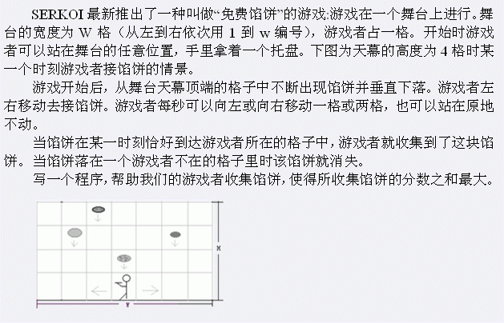

第一行是用空格隔开的二个正整数，分别给出了舞台的宽度W（1到10^8之间）和馅饼的个数n（1到10^5）。 接下来n行，每一行给出了一块馅饼的信息。由三个正整数组成，分别表示了每个馅饼落到舞台上的时刻t[i]（1到10^8秒），掉到舞台上的格子的编号p[i]（1和w之间），以及分值v[i]（1到1000之间）。游戏开始时刻为0。输入文件中同一行相邻两项之间用一个空格隔开。输入数据中可能存在两个馅饼的t[i]和p[i]都一样。

第一行是用空格隔开的二个正整数，分别给出了舞台的宽度W（1到10^8之间）和馅饼的个数n（1到10^5）。 接下来n行，每一行给出了一块馅饼的信息。由三个正整数组成，分别表示了每个馅饼落到舞台上的时刻t[i]（1到10^8秒），掉到舞台上的格子的编号p[i]（1和w之间），以及分值v[i]（1到1000之间）。游戏开始时刻为0。输入文件中同一行相邻两项之间用一个空格隔开。输入数据中可能存在两个馅饼的t[i]和p[i]都一样。
一个数，表示游戏者获得的最大总得分。
3 4
1 2 3
5 2 3
6 3 4
1 1 5
12
【数据规模】
对于100%的数据，1<=w,t[i]<=10^8,1<=n<=100000。